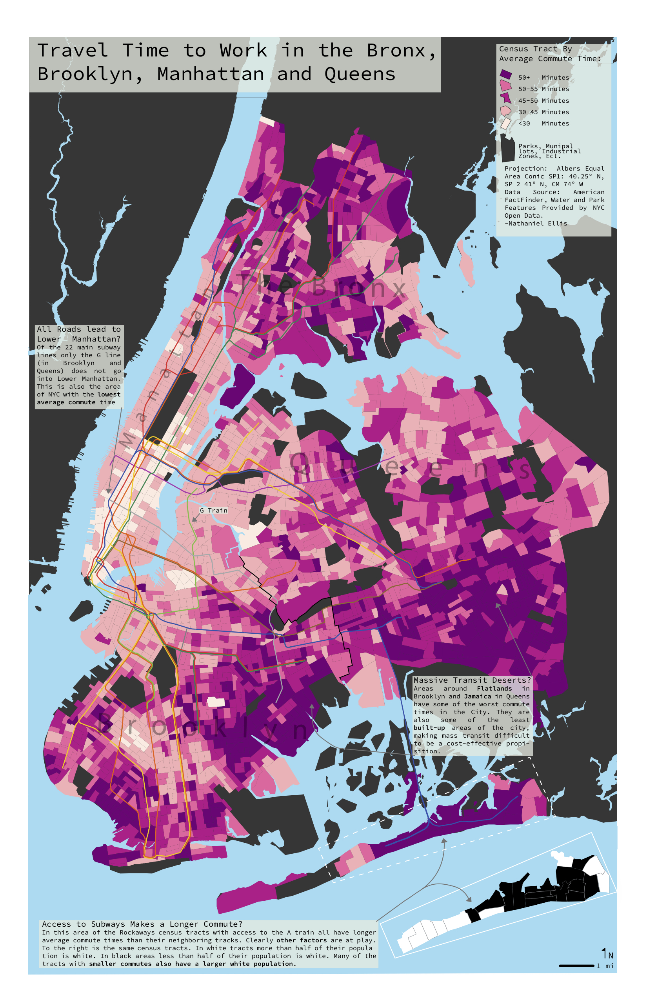
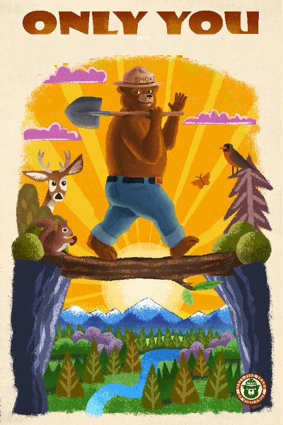

Hi! I'm Nathaniel Ellis.
Below is some of my work I did while I was living in Madison.
River Trees of the United States

(Pictured above is "Colorado Tree")
Here is some of Americas largest rivers represented as trees. I used USGS discharge data to determine the width
of the "truck", "branches", "branchlets", "twigs" etc. I used cities with more than a quarter of a million people as
the leaves and lakes as the knots on the tree. That being said, I love the flexibility and the possibilities that
someone could take the idea of tree representation. One could use leaves and knots to represent dams, bridges or any
natural
features or points of interests. Much of the choice will boil down to the individual river that is being
represented.
I would likely of made different design choices if I drew a "knotty" Saint Lawerence instead of the "thick"
Columbia,
"massive" Mississippi and "skinny" Colorado. It won 1st place in the Petchenik Award in 2019.
Download Tree Map
Commute Time of the Bronx, Brooklyn, Manhattan & Queens

Above is a choropleth map of commute time for New York City. I used Census data and overlapped the Subway
system.
I loved some of the trends that flew out of the census data (look at the Rockaways!)
Download Commute Map
Smokey the Bear Slippy Map

>
(Pictured above is a screenshot over the Atlantic)
Here I utilize Mapbox studies to do a take on an interactive “slippy” map inspired by forest fire
prevention ‘propaganda” of the 70s. It utilized psychedelic colors and wonky fonts so that the user of
the slippy map could see our world through the style of Smokey the Bear posters. I attempted to
utilize the colors of one poster in particular (link to image) and made attempts to recreate the natural
environment that we see in the forest images on the scale of the world. Below is a USFS poster that the map drew inspiration from.
Go to Slippy Map

About Me
I've lived in New York, Oregon, Wisconsin and Wyoming. I've worked fires in California, Montana, Nevada, Oregon, Washington, Wyoming and Italy. I can use Python, Arc Suite, QGIS, Microsoft Office, Adobe Suite, Storyboards.
My email is nedellis52@gmail.com
Download Resume
{kind=link}